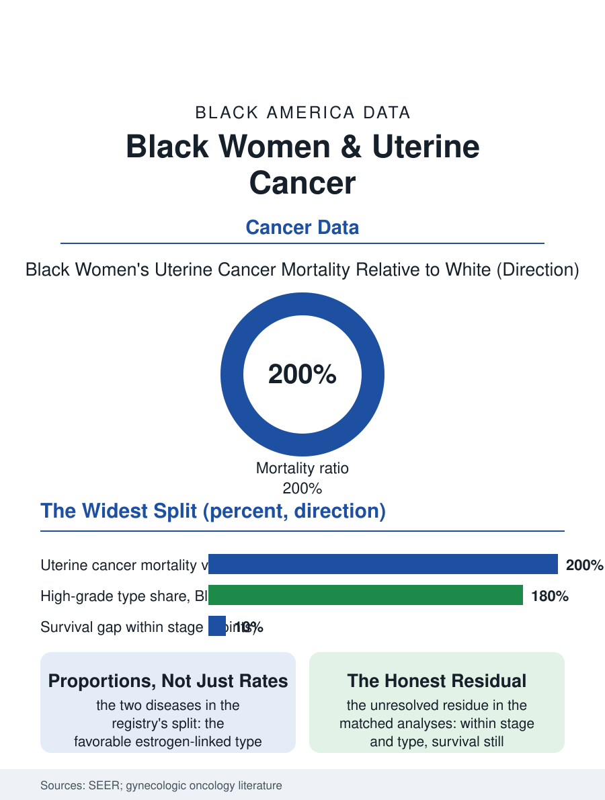

Black Public Health
The Widest Split: Black Women and Uterine Cancer
Lower incidence, double mortality, two diseases in different proportions, and a bleeding signal whose biopsy interval is auditable. The uterine file.

Uterine cancer, endometrial cancer, presents the oncology file's widest mortality split: the incidence in Black women runs modestly below the white rate in the recent data, while the mortality runs roughly double, a divergence composed of the tumor types' distribution, the stage at the bleeding's workup, and a survival gap within every stage and type the registry can form. This article reads the uterine file.
Two Diseases Under One Name
The histology file is the divergence's first component: endometrial cancers divide into the endometrioid type, the estrogen-linked, generally favorable cancer that dominates the white incidence, and the serous and other high-grade types, biologically aggressive and unrelated to the estrogen file, which constitute a substantially larger share of the Black incidence, so that the organ's total conceals two diseases whose proportions differ by race in the registry data. The stage file is the second: the cancer's signal, postmenopausal bleeding, is oncology's clearest early warning, and its workup, the biopsy that follows the report, is the file's process measure, the interval and the biopsy rate after the bleeding's presentation distributing by the access and encounter files' patterns in the studies that timed them, with the Black woman's bleeding more likely to be attributed to the fibroid file's benign causes across the first visits. The survival-within-stage gap is the file's hardest residue: matched by stage and histology in the registry analyses, the Black woman's survival trails, the difference narrowing and not closing under the treatment variables, the surgery's completeness, the adjuvant therapy's delivery, and the trial enrollment, the file's researchers assigning the remainder to the biology's unmeasured components and the care's unmeasured ones with an honesty about the residual that the file honors by reporting it as unresolved. The molecular classification era is redrawing the file's map in the current data, the tumor's genomic classes cutting across the histology's two diseases with their own treatment implications, and the testing that assigns the class is entering the cascade as its newest gate, whose distribution by the treatment center the file's next audit is already positioned to read.
The Hysterectomy's Shadow
The file's distinctive background is the hysterectomy prevalence itself: Black women undergo hysterectomy for the benign disease, the fibroids above all, at the highest rates and the youngest ages in the surgical data, which removes a large share of the population at risk from the uterine cancer file entirely and complicates the incidence's denominator, the rates being computed on the women with a uterus in the corrected analyses, whose adjustments move the Black incidence to parity or above in the methodologists' readings. The surgical treatment file for the cancer itself, the hysterectomy with the staging the guidelines prescribe, distributes by the volume and referral pattern, and the minimally invasive approach's adoption, with its recovery advantages, arrived at the safety-net systems on the technology diffusion's usual schedule. The obesity file is the incidence's rising driver, the endometrioid type's estrogen link making the metabolic file the cancer's future map in every population, the Black women's obesity prevalence writing the file's forward incidence in the current data's trend.
The Bleeding's Interval
The uterine file closes on the postmenopausal bleeding's interval, the clearest signal-to-action pathway in the gynecologic oncology file, whose audit is therefore the system's own: the days from the report to the biopsy, by the patient's race, in the systems that measure it, a number that exists to be equal and is published, where it is published, not yet equal. The awareness file is the public's half, the bleeding's significance being a teachable fact whose campaigns the women's health organizations have aimed at the population the incidence chose, in the pattern of the community education files. The registries count the deaths at double the white mortality against the lower incidence, the section's widest such divergence. The file's last entry is the biopsy that the bleeding asked for, performed in the office in minutes when the pathway fires, the tissue carrying the answer the whole file waits on, type and grade and the treatment they dictate, the distance between the signal and the answer being, in days and in the data, the whole of the disparity that the biology did not write.
More in Black Public Health
Hypertension Among Black Adults: Prevalence, Control, and Consequences
About 55 percent of Black adults have hypertension — the highest rate of any U.S. group. Prevalence, onset, control, and the stroke, heart, and kidney consequences in the data.
Diabetes Among Black Adults: Prevalence and Complications
Nearly one in five Black adults has diabetes, diagnosed or undiagnosed — and its complications fall with particular weight. The CDC data on prevalence, control, and outcomes.
Black Life Expectancy: The Gap at Birth and Its Causes
Black life expectancy at birth is about 73 years, roughly five years below the national figure — the summary measure of every health gap in this section. The CDC data.
Source: National Cancer Institute SEER program; gynecologic oncology histology and survival literature.